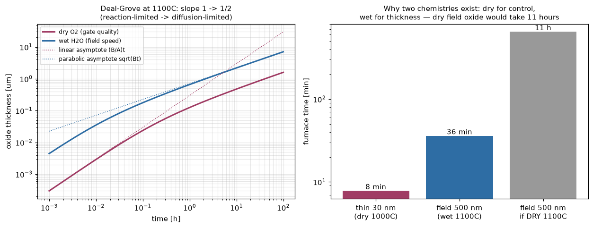
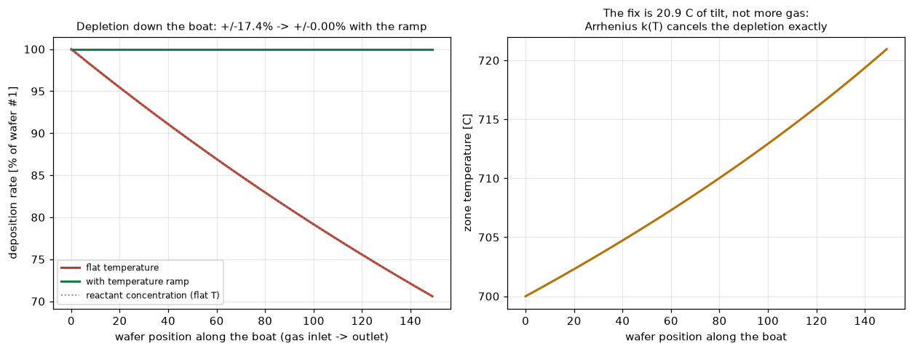

縦型バッチ炉の会社のド真ん中2題：熱酸化のDeal-Groveモデル（業界で最も有名なプロセス式 x²+Ax=B(t+τ) を実装し、自前ODE積分と解析解を閉ループ）と、バッチ炉の反応ガス枯渇と温度傾斜補償（150枚目のウェハに届くガスは149枚分消費済み——それを数式で潰す）。
酸化剤は既存酸化膜を拡散し（流束∝D/x）、Si界面で反応する（∝ks）——両者を等置すると dx/dt=B/(2x+A)、解は有名な線形-放物線則 x²+Ax=B(t+τ)。自前ODE積分（RK2）が解析解と0.000%一致し、薄膜域はx≈(B/A)t、厚膜域はx≈√(Bt)にそれぞれ±2%で漸近（log-logで傾き1→1/2の折れ曲がり）。ウェットのBはドライの19倍：薄膜30nmはドライ1000°Cで8分、フィールド500nmはウェットで36分——ドライでやると11時間。正直な注記：Deal-Groveは20nm以下のドライ酸化を過小予測する「薄膜異常」で有名（τはそのパッチ、後にMassoudが補正）——だから薄膜レシピはモデルの有効域内の30nmで引用。

縦型炉は150枚同時処理がスループットの源泉——だが1次表面反応のLPCVDでは反応ガスがボートに沿ってC(z)=C₀exp(−kaz/Q)で枯渇し、成膜レートは±17.4%も傾く（質量収支は<1e-9で厳密検証）。古典的で美しい解決が温度傾斜：Arrhenius k(T)で局所レート k(T(z))·C(z)=一定 になるT(z)を固定点反復で解くと、+21°Cの傾斜で均一性0.00%。「ゾーン設定温度が数度ずつ違う」バッチレシピの正体はこの計算。枚葉装置（本リポジトリの他工程）とのスループット×均一性トレードオフの、均一性側の払い方。

関連（実装済み）：注入・PVD・エッチ/ALD・レジスト（PEBの熱）。出所：kokusai/{oxidation, batch_furnace}.py。